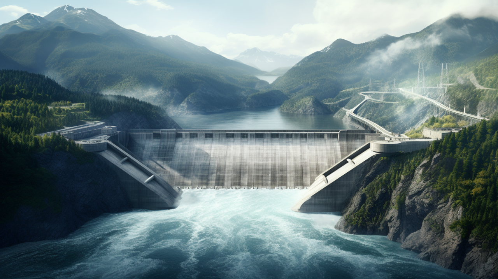

Renewable energy refers to power generated from natural sources that are constantly replenished. These sources are crucial for sustainable development as they help reduce greenhouse gas emissions and dependency on fossil fuels. By getting power from renewable energy sources, we can significantly decrease the impacts of climate change, while promoting energy security, and more economic stability. The adoption of these technologies lead to innovations and the creation of jobs in green energy industries.
Renewable energy is important for reducing greenhouse gas emissions and climate change, as it produces little to no emissions at all. It also decreases air pollution, improving public health by reducing respiratory and cardiovascular issues caused by pollution emitted by fossil fuels. Renewable energy sources, such as solar and wind, are sustainable, which can make a long-term supply of energy. Renewable energy can cause economic growth by creating jobs in the green energy sector and lowering dependence on fuels.
Renewable energy harnesses natural resources that replenish themselves over time. Solar energy is captured using solar panels, which convert sunlight directly into electricity. Wind energy is harnessed using wind turbines that capture the energy of the wind and convert it into electricity. Hydropower is generated by directing flowing water through turbines, typically in dams or reservoirs, to produce electricity. These sources provide clean, sustainable energy alternatives that help reduce greenhouse gas emissions and combat climate change.